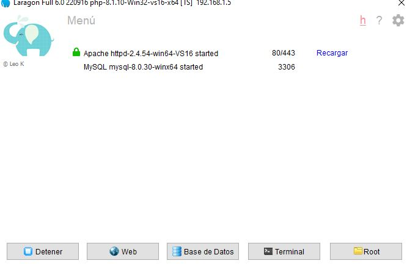
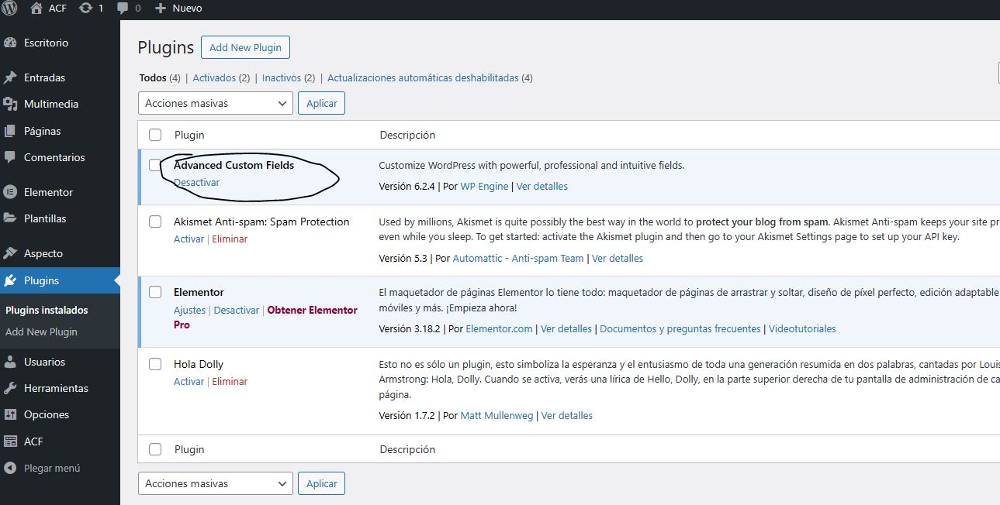
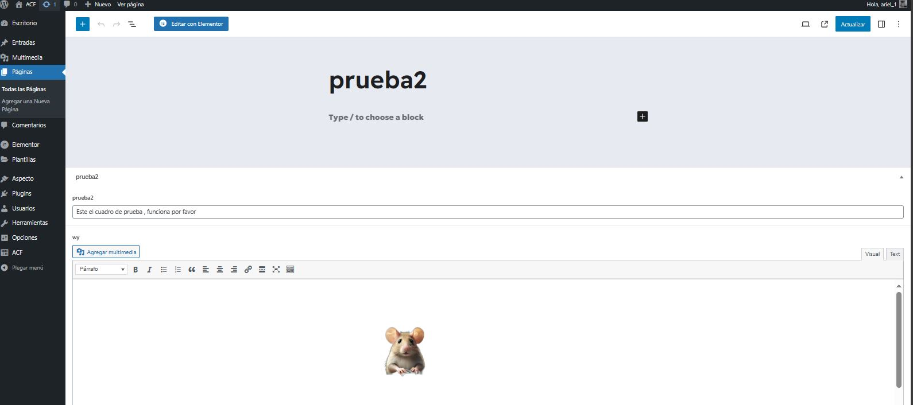
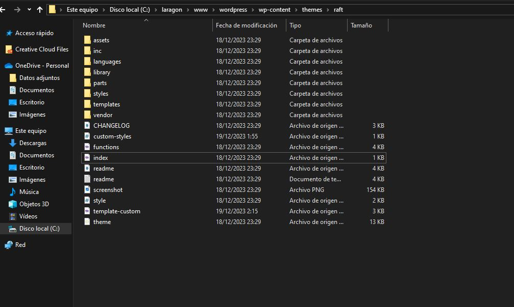
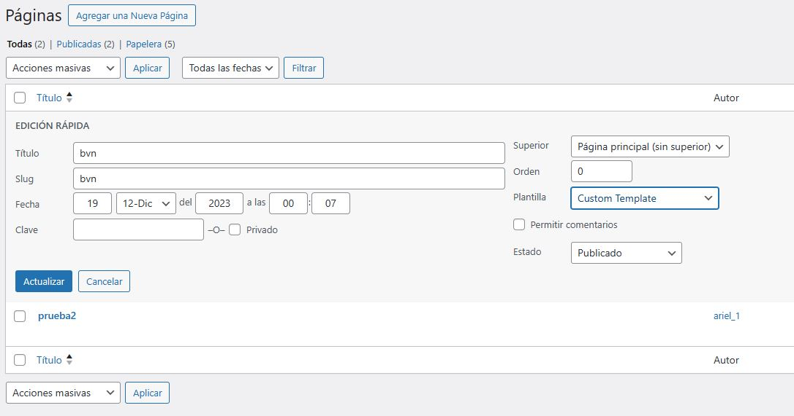
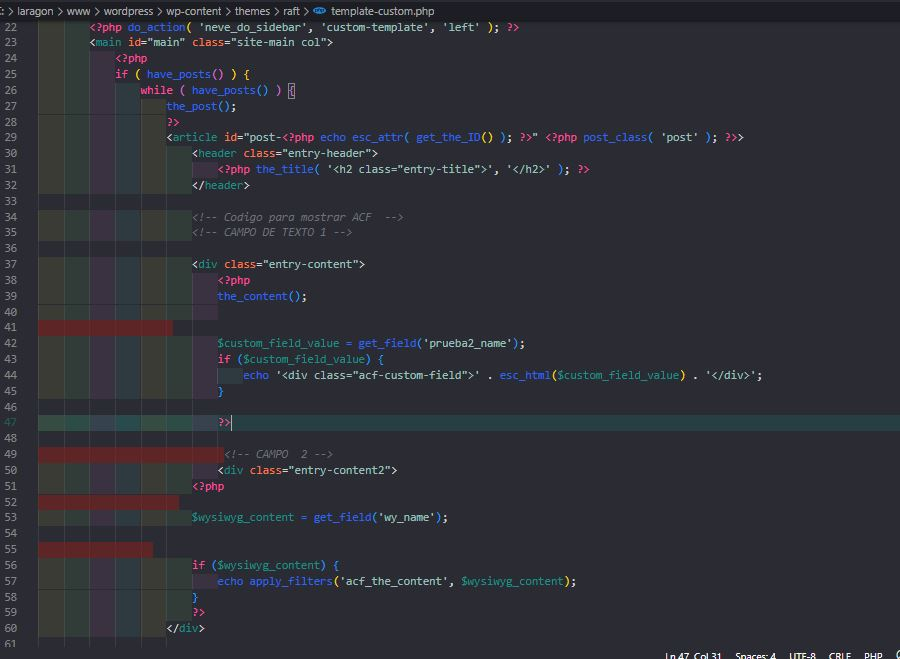
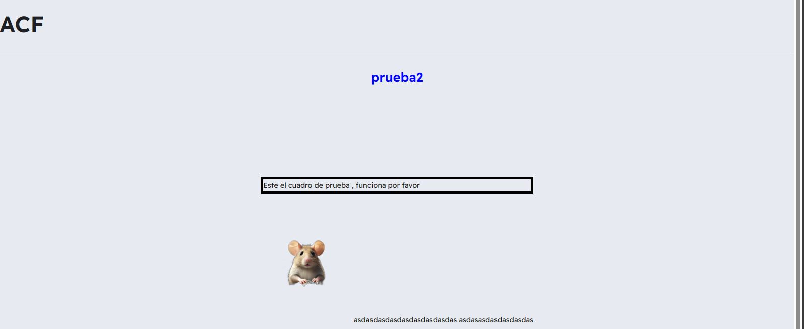

Mi Experiencia Desarrollando con WordPress y Laragon
¡Bienvenidos a mi presentación sobre el plugin de WordPress. Mi nombre es Ariel Retamales y les contaré acerca de mi elección de tecnologías, experiencias previas y cómo esta combinación facilitó el desarrollo de mi proyecto.
-
Elegí Laragon debido a que ya lo habia utilizado en otros proyectos, conozco sus principales funciones y caracteristicas por lo que fue sencillo instalar Wordpress de manera local. Una vez con WordPress en local instalé el plugin(Advanced Custom Field) siguiendo todas las indicaciones que aparecian en la página del plugin, el proceso fue rapido y sin ningún problema.(hasta el momento)
  -
Cree los campos solicitados y los agregué a la sección de página, al editar este componente pude ver los campos incluidos (Campo de texto y un editor de texto) y por el momento todo marchaba bien.
***Editor WYSIWYG (del inglés "What You See Is What You Get", que significa "lo que se ve es lo que se obtiene") es un tipo de editor HTML que permite modificar la página web en una vista simplificada sin código similar al diseño de página real
Al intentar visualizar estos campos en el front es donde se presentó el mayor problema. Por lo que leí en internet y ví en algunos tutoriales la forma de incluir los campos era a través de una función llamada "get_field", esta función se incluye en el archivo "principal" por lo general este archivo lleva como nombre "single.php o home.php".Sin embargo debido a que cada tema se forma con estructuras diferentes se me hizo complejo encontrar este archivo. En algunos temas encontré un archivo llamado index.php , sin embargo se encontraba vacio y con un mensaje "silence is golden" por lo que entendí es un archivo el cual no se debe modificar.
 -
La solucion : Al no tener ese archivo de referencia tuve que crear una plantilla a la que llamé template-custom.php.Luego creé una nueva página en WordPress y le asigné esa plantilla, luego agregué la función dentro de ese archivo y por fin pude visualizar los campos en el front.
Al intentar visualizar estos campos en el front es donde se presentó el mayor problema. Por lo que leí en internet y ví en algunos tutoriales la forma de incluir los campos era a través de una función llamada "get_field", esta función se incluye en el archivo "principal" por lo general este archivo lleva como nombre "single.php o home.php".Sin embargo debido a que cada tema se forma con estructuras diferentes se me hizo complejo encontrar este archivo. En algunos temas encontré un archivo llamado index.php , sin embargo se encontraba vacio y con un mensaje "silence is golden" por lo que entendí es un archivo el cual no se debe modificar.
 -
Se logró !, ahora toca crear un archivo en css y referenciarlo en el archivo php para poder editarlo.
 -
Resultado Final
-
Reflexiones Finales